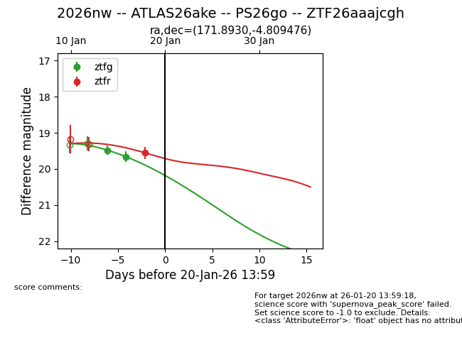
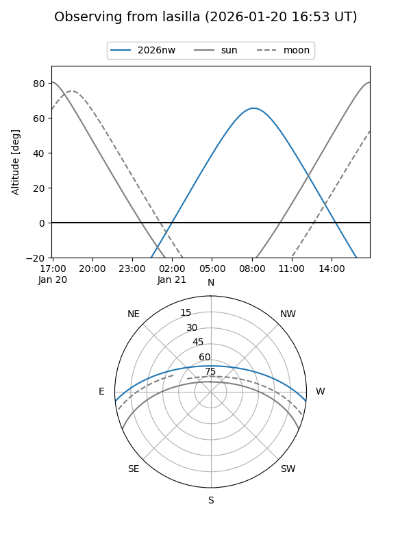
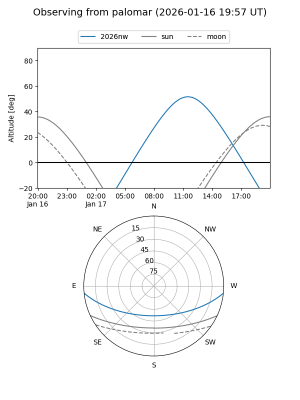
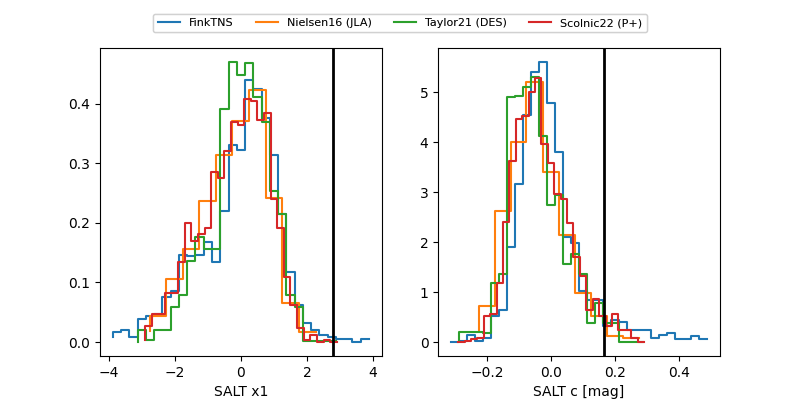

2026nw
Target 2026nw at 2026-01-25 16:01
Aliases and brokers:
FINK: link
Lasair: link
ALeRCE: link
TNS: link
YSE: link
alt names
ZTF26aaajcgh (ztf,fink_ztf)
2026nw (tns,yse)
ATLAS26ake (atlas)
PS26go (panstarrs)
Coordinates:
equatorial (ra, dec) = 171.8930,-4.80948
equatorial (HMS+DMS) = 11:27:34.33,-04:48:34.11
galactic (l, b) = (267.3794,+52.17664)
Flags:
Photometry:
last ztfg=19.57, ztfr=19.55
3 ztfg, 1 ztfr detections
Lightcurve

Visibility


Additional plots
